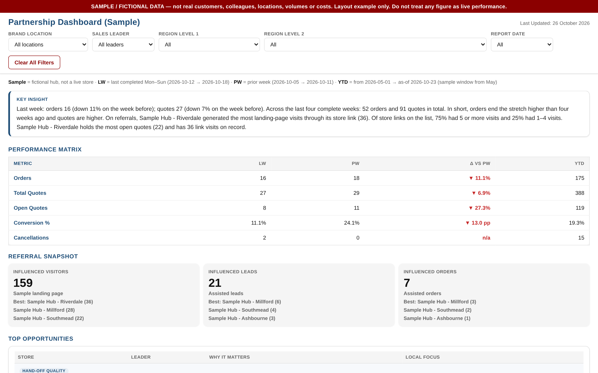

Case study 03
A weekly partnership review that tells each sales leader where to focus next.

Tracks 500+ orders and 3,000+ quotes, and replaced a stack of separate spreadsheets in the weekly review.
Orders, quotes and in-store referral visits for a joint retail partnership lived in different extracts. Leaders couldn't tell whether a site was quiet, converting well, or getting visits that never became leads.
Each site's issue is now named alongside the local action, instead of buried in a table. The weekly review starts from the opportunities, not from the raw numbers.
Brand partnerships, concessions and wholesale accounts all raise the same questions: which partner sites perform, where hand-offs fail, and what each account manager should do this week.